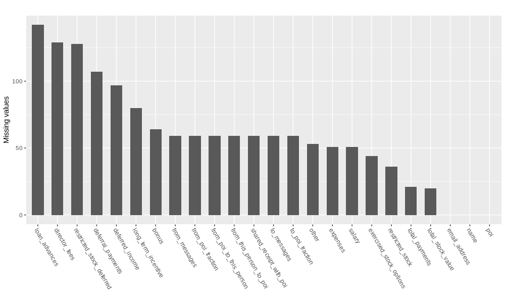
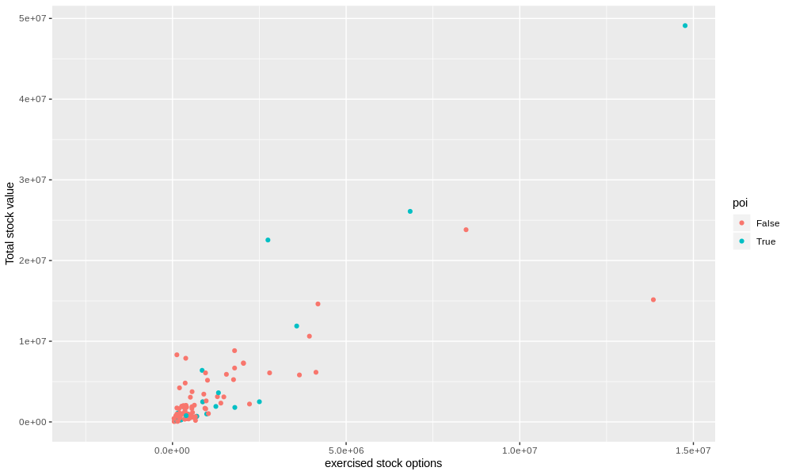
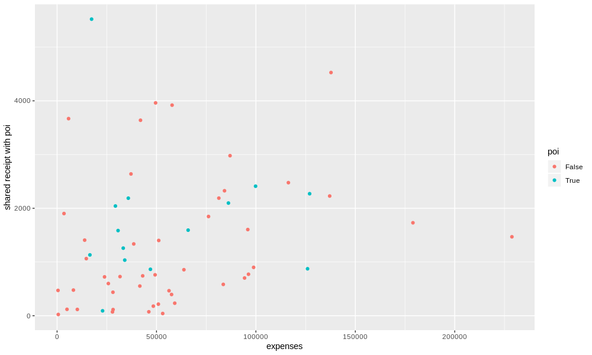
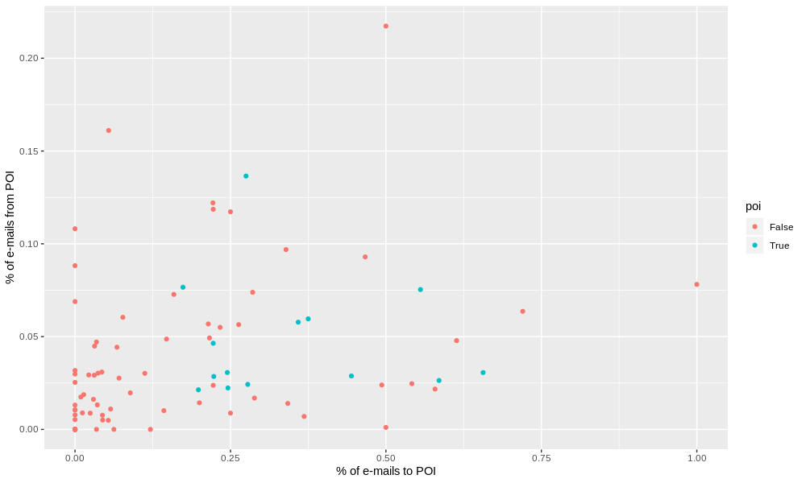

In the early 2000s the FERC ivestigated Enron for corporate fraud and in doing so seized over half a million e-mail records that were subsequently released to the public as the "Enron corpus". Thousands of FERC man hours went into investigating this corpus and much of that time was spent reading banal corporate memos written by innocent employees. Now that that's been done though we have not only a dataset of corporate e-mails but also a dataset of persons of interest to the investigation and financial data about the people involved. This extended corpus seems like it has all of the components necessary to create a classifier that takes in e-mail and financial data inputs and maps them to persons of interest. Naturally doing so by hand would be at least as tedious and expensive as it was for the FERC employees but with machine learning methods we can create a proof of concept POI classifier in an afternoon.
The first step is naturally taking a look at what's in this dataset and what might be useful to a fraud classifier. There are 14 financial features dealing primaritly with monetary compensation and liabilities. Direct monetary compensation like salary and bonus, stock-based compensation features, and liabilities such as loan advances and expenses. Direct monetary compensation doesn't have all that much wiggle room for the creative accounting that enron is known for so it's probably best to exclude these. Some stock compensation features are potentially worth keeping due to how stock options change employee incentive structures: Options lock the price the employee pays before it changes and therefore incentivize high risk deals in order to get big payoffs, i.e., gambling with the company assets. This sort of behavoir isn't fraudulent per se but it correlates strongly enough with actual fraud that they can stay in for now. Then we have liabilities which are the most obvious category for signalling corruption. Embezzlement through simply writing down a higher expense number than needed and pocketing the difference is such an obvious form of fraud you can't help but include these in the classifier.
There are also features derived from the e-mail dataset to consider: the counts of messages sent and recieved and counts for messages that involved a person of interest in some way. It's a natural assumption that if you deal with POIs often you're also likely to be a POI yourself, however, in their current state these won't be all that useful for classification. The reason being that it doesn't discriminate between someone who sends a lot of messages to POIs specifically vs people who just happen to send a lot of messages in general. Unless we want our classifier to mark every HR rep and project manager as a potential POI I think it's wise to do a bit of data massaging before we start plugging these into a classifier. I chose to solve this problem by deriving 2 new features from the existing ones: namely, the fraction of messages to and from a POI. This certainly helps to amortize away the prolific e-mailers but there is another problem to take note of. A person is also quite likely to have more correspondence with POIs than average if they happen to be nearby in the corporate hierarchy, e.g., you e-mail your coworkers more simply because they are your coworkers. Unfortunately, solving this problem is a lot more involved. We'd need data about corporate messaging trends as well as a complete map of the enron hierarchy which we unfortunately don't have. This doesn't leave us dead in the water for a proof of concept but it's worth noting the limitations of this exercise.
Now let's dig into the details of this dataset: how many datapoints do we have, how are they distributed, are there outliers to deal with, which features are valid, and does it look like we'll have enough data overall to craft a reasonable classifier. First, a plot of each feature and how many data points it's missing.
Immediately I notice 2 things: poi classification, names, and email addresses are all present and a good number of features are going to be effectively useless. There are only 145 (after removing "TOTAL") people in this dataset so each data point is precious, however, no classification algorithm is going to work well when the vast majority of a feature is NaNs. As a completely arbitrary choice I say we nix any feature that is more than half missing, i.e., loan_advances through long_term_incentive. The stock features have a very low number of missing datapoints so let's take a closer look at them.
Initially you might notice a few outliers here but they are very much a product of the specifics of the Enron situation and therefore "legitimate outliers". Of course the Enron executives are going to have stock values far above average but we definitely don't want to remove them from the dataset. With that noted though we probably don't want to include these features in the classifier anyway. Naturally not all corporate fraud goes all the way to the top so including a boundary based on this merely prejudices our classifier against executives. Remember we're not trying to re-derive Enron's POIs but create a general POI classifier to be used with new data. It's a similar tale for the other stock features, other, and total_payments as well so dropping them all from consideration should prove prudent. That leaves the classifier with a mere 4 potential features: from_poi_fraction, shared_receipt_with_poi, to_poi_fraction, and expenses.
Now this may look a bit chaotic but if you stare at it for long enough you might notice a few relatively clean cuts that separate the data. Most of the blue points lie in a box defined by expenses between 20,000 and 160,000 and shared receipts between 800 and 2500. It's up to the classifier algorithm to determine how useful this observation is but these are certainly features with potential.
Again the boundary isn't extremely clean but the distribution of blue points is certainly distinct enough from red points to be potentially useful.
Now that we have gathered some evidence that this data could work we need to consider what exactly we want our person of interest classifier to do. Obviously that will entail separating POIs from non-POIs but there are many ways to judge just how well a classifier is doing and they are certainly not all equal for all problems. For example take accuracy which is simply how often you guess the right label. If there are say 50 POIs and 50 non-POIs in a dataset then an accuracy of 97% means that the the model is incredibly good. Now say there were only 3 POIs and 97 non-POIs and your model has the same accuracy. It could be that your model is as good as the 50-50 case but it's likely you've instead made the machine learning equivalent of a paperweight that just guesses non-POI no matter what. As the POI data we're using is very lopsided in this way it makes sense to use other metrics such as precision and recall.
Precision is the fraction of correct POI responses over total POI responses, i.e., when it outputs POI how likely is the person to actually be a POI.
Recall is the fraction of correct POI responses over total POIs, e.g., if there are 16 people who should be marked as a POI and the model marks only 4 of them it has a recall of 25%.
With these metrics we remove the needle in a haystack problem of accuracy and better capture what we actually want the model to do: take a list of people and mark all the POIs and only the POIs. Recall gets us the "mark all" part and Precision gets us the "and only" part therefore we need both to make a reasonable POI classifier. As for how these should be weighed against one another is up to the actual use case. For example if guilt were determined entirely based on this classifier you'd want to be absolutely sure they aren't innocent so you'd require the precision be as high as possible whereas if this were used for prioritizing who to investigate first you might prefer higher recall so you don't miss anyone important. I'll be setting them at equal importance so as to not assume any specific use case.
The most important part of any model and the thing that underlies all of machine learning validation is the ability to generalize. Performance on unseen data is how classifiers are used in practice therefore, we should do as much as possible to ensure our classifier generalizes while training. How this is typically done is by splitting a dataset into 3 different sets: training, testing, and validation. Training is the data we use to learn patterns in the data and testing is how we test the performance of those patterns. The utility of the validation set is a bit more subtle and comes down to thinking about how "out of sample" the testing data actually is. If you're using it to tune your model's parameters and/or select models then naturally some of the patterns in the testing set are being included in your model even if indirectly. The validation set guards against this by only being included right at the end of all training sessions and acts as the purest out of sample test. That being said, the benefit from a separate validation set for a dataset as small as this one is tenuous at best and limits our usable data substantially. Therefore I'll only be using training and testing sets while recognizing that the numbers may be somewhat optimistic.
As we have whittled down our initially small dataset to an even smaller one it's probably wise to go with a classification model with an appropriately low VC dimension, i.e., simple. This restriction eliminates most ensemble methods like boosting and random forests as well as complicated individual classifiers like neural networks. That still leaves us with many models to try out so I'll arbitrarily restrict the field to 5: perceptrons, naive bayes, support vector machines, decision trees, and k-nearest neighbors. First let's see how each one performs using default settings and our 4 features:
| Accuracy | Precision | Recall | |
| Perceptron | 0.65058 | 0.13800 | 0.20900 |
| Naive Bayes | 0.79392 | 0 | 0 |
| Support Vector Machine | 0.83333 | 0 | 0 |
| Decision Tree | 0.75773 | 0.33266 | 0.33050 |
| K-nearest Neighbors | 0.77867 | 0.02187 | 0.00750 |
Bayes and support vectors are massively underpredicting POI labels and decision trees simply outperform both perceptrons and k-nearest in every metric. Decision trees it is.
Decision trees are simple recursive algorithms for splitting some set of points into 2 subsets until some state is reached. In addition they don't require feature scaling but tend to overfit easily if the parameters aren't tuned properly. The parameters of a decision tree are many but they primarily come down to how a split should happen and when to stop dividing the data. Tuning these parameters is often fairly straightforward and I think the easiest way to explain how it works is to just show the process. The following is the raw data produced while training this classifier from the default. Best results so far in bold. For reference default parameters are criterion:gini, splitter:best, max_depth:None, min_samples_split:2, min_samples_leaf:1, max_features:None
| Accuracy | Precision | Recall | Parameter | Value |
| 0.78600 | 0.35913 | 0.36200 | defaults | |
| 0.79675 | 0.38129 | 0.35250 | criterion | entropy |
| 0.77225 | 0.30882 | 0.29600 | splitter | random |
| 0.81675 | 0.43929 | 0.36000 | max_depth | 5 |
| 0.79817 | 0.38457 | 0.35150 | max_depth | 10 |
| 0.80833 | 0.40876 | 0.33600 | max_depth | 6 |
| 0.83475 | 0.50503 | 0.42650 | max_depth | 4 |
| 0.86583 | 0.60845 | 0.54700 | max_depth | 3 |
| 0.80458 | 0.42821 | 0.51450 | max_depth | 2 |
| 0.86583 | 0.60845 | 0.54700 | min_samples_split | 10 |
| 0.83450 | 0.50769 | 0.31753 | min_samples_split | 50 |
| 0.80550 | 0.43018 | 0.51450 | min_samples_split | 30 |
| 0.86567 | 0.61466 | 0.52000 | min_samples_leaf | 5 |
| 0.86658 | 0.61151 | 0.54700 | min_samples_leaf | 2 |
| 0.86933 | 0.62301 | 0.54700 | min_samples_leaf | 3 |
| 0.86892 | 0.62507 | 0.53350 | min_samples_leaf | 4 |
| 0.86642 | 0.62008 | 0.51250 | max_features | 3 |
| 0.86575 | 0.60451 | 0.56250 | max_features | 2 |
| 0.80625 | 0.32284 | 0.15900 | max_features | 1 |
As you can see all paramater tuning really comes down to is educated guess and check, e.g., there are 2 possible values for the "criterion" parameter so I tried both and went with the better one. Note the diversity of parameter changes: some are strictly better in every way, some strictly worse, and some are tradeoffs between different metrics. This is why understanding the use case of a classifier is so incredibly important. Imagine you are making a fingerprint scanner for a top secret government facility. In this example it is far more important to have high precision than high recall as the downside for rejecting an authorized person is nothing compared to letting an unauthorized person through. Given that I chose to prioritize them equally we ended up with the following performance:
Accuracy: 87%
The model assigns the wrong label 13% of the time
Precision: 62%
When the model outputs a POI label the person has a 62% chance of actually being a POI
Recall: 55%
More than half of the POIs are marked as POIs
Digging into the model a bit more deeply also shows which of the features ended up as the most important: expenses (38%), to_poi_fraction (31%), shared_receipt_with_poi (19%), and from_poi_fraction (12%). That means we don't have any extraneous features that are slowing the model down and we've come to the end of this exercise. We've achieved quite reasonable performance despite only using high level summary statistics of the enron dataset. Further research that leverages the actual text content of the e-mails should prove quite fruitful for POI classification.